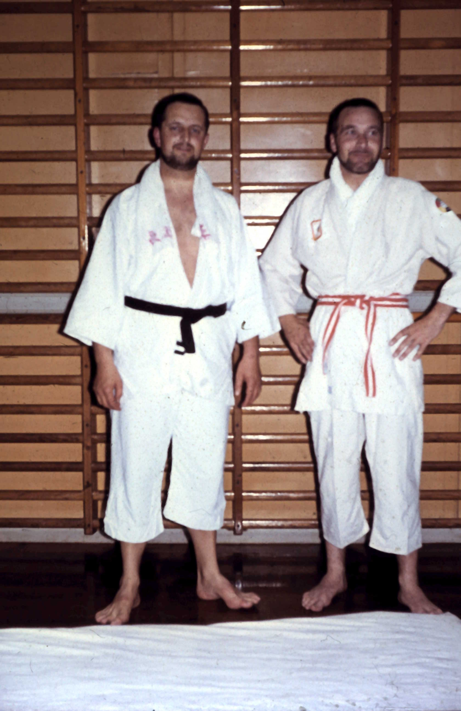

En af rødderne til klubbens ju-jitsu
Christian Christiansen begyndte sin ju-jitsu-træning som soldat på Flyvestation Værløse hos kaptajn, senere major, Knud Janson. Det var 13 år før klubbens stiftelse.
EN RIGTIG AMAGERKLUB
Vores historie begynder med lysten til at lære selvforsvar. Den fortsætter, hver gang vi mødes på måtten.

01 / BEGYNDELSEN
Aiki-do er en af landets ældste aktive ju-jitsu-klubber.
Behovet for klubben opstod gennem en række selvforsvarskurser i første halvdel af 1960’erne. Især hold med selvforsvar for kvinder var populære.
I 1965 stiftede Algot Jensen og Øjvind Rasmussen klubben under navnet judoklubben Aiki-do. Sammen med Børge Olsson og Henrik Petersen var de de bærende kræfter i begyndelsen.
Børge Olsson var kørelærer i Kastrup og havde et mesterskab i judo. De tre andre arbejdede i Sporvejene.
02 / FRA DENGANG TIL NU
Christian Christiansen begyndte sin ju-jitsu-træning som soldat på Flyvestation Værløse hos kaptajn, senere major, Knud Janson. Det var 13 år før klubbens stiftelse.
Algot Jensen og Øjvind Rasmussen grundlagde klubben. Omkring et halvt år senere kom Christian Christiansen til. Også han var ansat i Sporvejene.
Børge Olsson, Henrik Petersen og Øjvind Rasmussen stoppede af forskellige årsager inden for klubbens første år. Algot Jensen og Christian Christiansen kom derefter til at stå i front for klubben gennem de første 25 år.
Træningen begyndte på Skolen ved Sundet. Siden gik vejen blandt andet forbi Skottegårdsskolen og Tårnby Gymnasium, før klubben fik sit nuværende hjem på Tårnby Skole.
I dag træner vi ju-jitsu i Pigernes Gymnastiksal på Tårnby Skole. Vi har hold for voksne samt børn og unge fra 8 år.
Se vores træningstider03 / BLIV EN DEL AF HISTORIEN
Vi er stadig en lokal klub med rødder på Amager. Her mødes begyndere og øvede for at træne selvforsvar og udvikle deres ju-jitsu.
Du kan starte fra du er 8 år. Tag træningstøjet med og kom og prøv, om det er noget for dig.
Mød folkene bag klubbenTÅRNBY SKOLE · PIGERNES GYMNASTIKSAL
Spørg løs, eller kom forbi til træning.